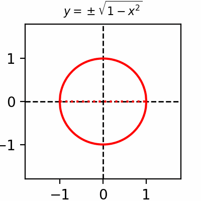

from matplotlib import pyplot as plt
import numpy as np
from matplotlib.animation import FuncAnimation, PillowWriter
# https://de.wikipedia.org/wiki/Datei:HERZ_Muttertags-Herz-Formel_2.PNG
class App:
def __init__(self):
self.fig = plt.figure(figsize=(2,2))
self.ax = self.fig.add_subplot()
self.ax.set_xlim(-1.8, 1.8)
self.ax.set_ylim(-1.8, 1.8)
# Add zero axes
self.ax.axhline(0, color='black', linewidth=1, linestyle='--') # Zero y-axis
self.ax.axvline(0, color='black', linewidth=1, linestyle='--') # Zero x-axis
self.lines = []
self.anim = FuncAnimation(self.fig, self.animate, interval=10, frames=200, repeat=True)
# Save animation as a GIF
self.writer = PillowWriter(fps=30) # Adjust FPS as needed
self.anim.save('heart.gif', writer=self.writer)
plt.show()
def animate(self, frame):
f = min(frame / 100, 1.)
x = np.linspace(-1, 1, 200)
y1 = np.sqrt(1 - x**2)
y2 = - np.sqrt(1 - x**2)
y3 = np.sqrt(abs(x))
for line in self.lines:
line.remove()
l1, = self.ax.plot(x, y1 + f * y3, color='red')
l2, = self.ax.plot(x, y2 + f * y3, color='red')
l3, = self.ax.plot(x, f * y3, color='red', linestyle='dotted')
s = r"$\pm \sqrt{1 - x^2} + " + f"{f:.2f}" + r"\cdot \sqrt{|x|}$"
self.ax.set_title(s, fontsize=8)
self.lines = [l1, l2, l3]
App()